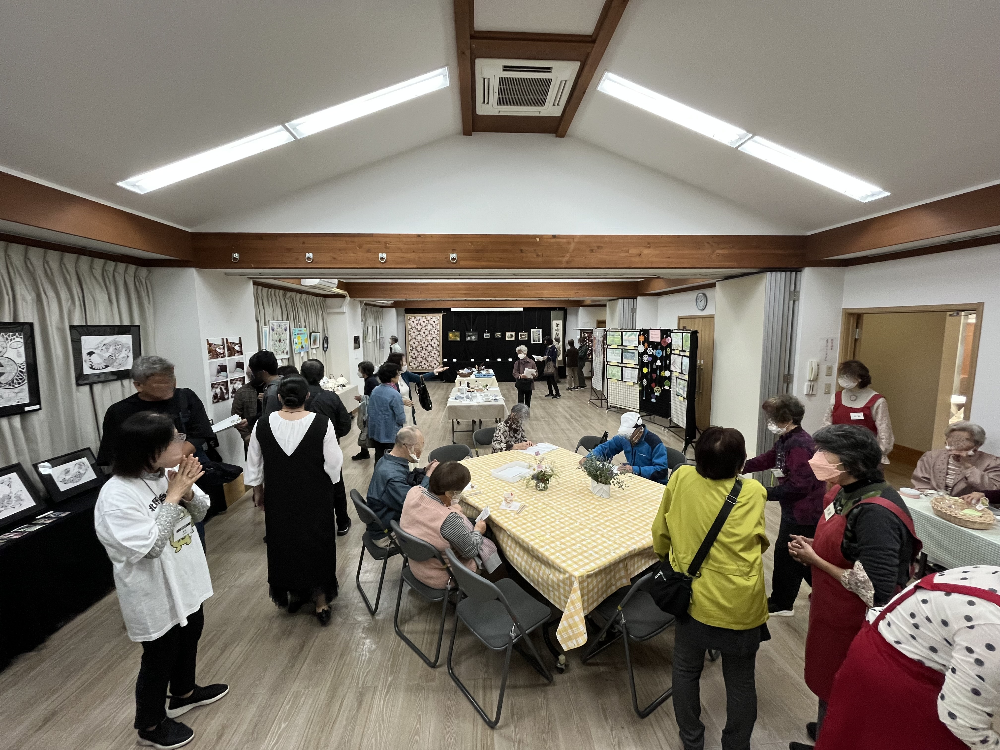
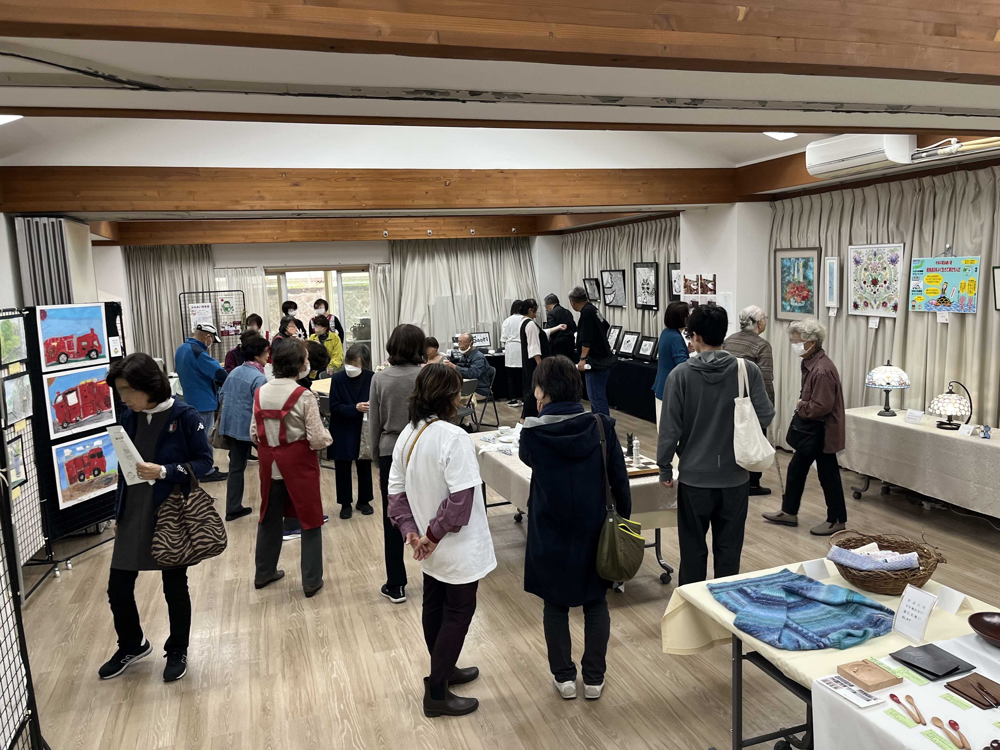
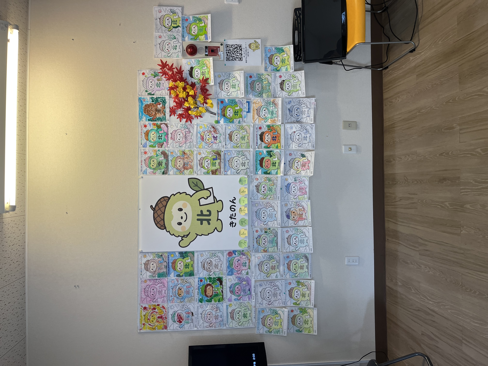
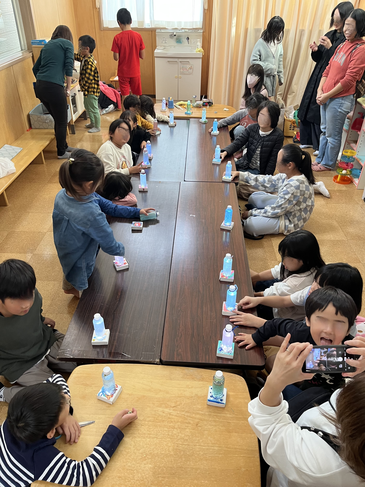
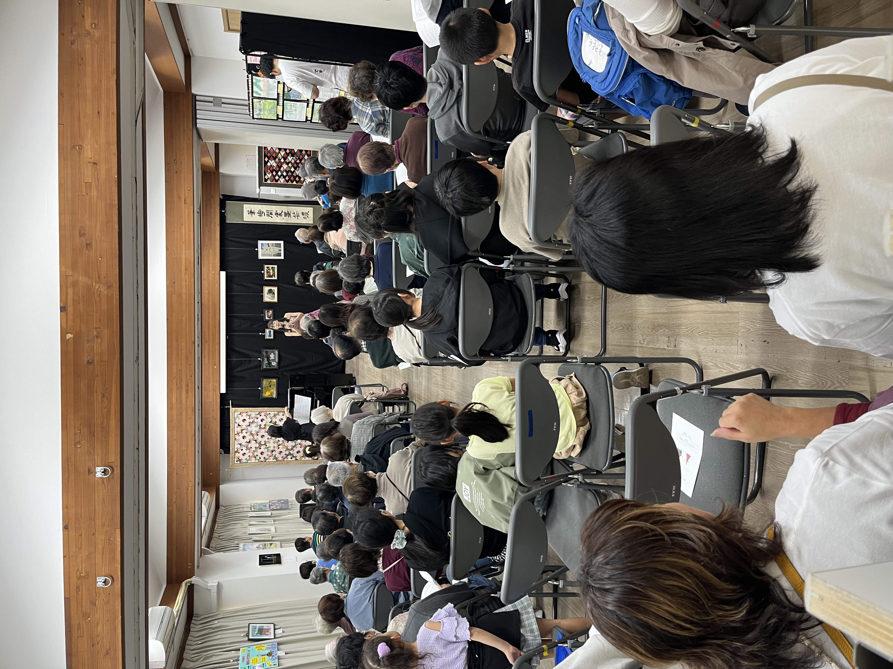
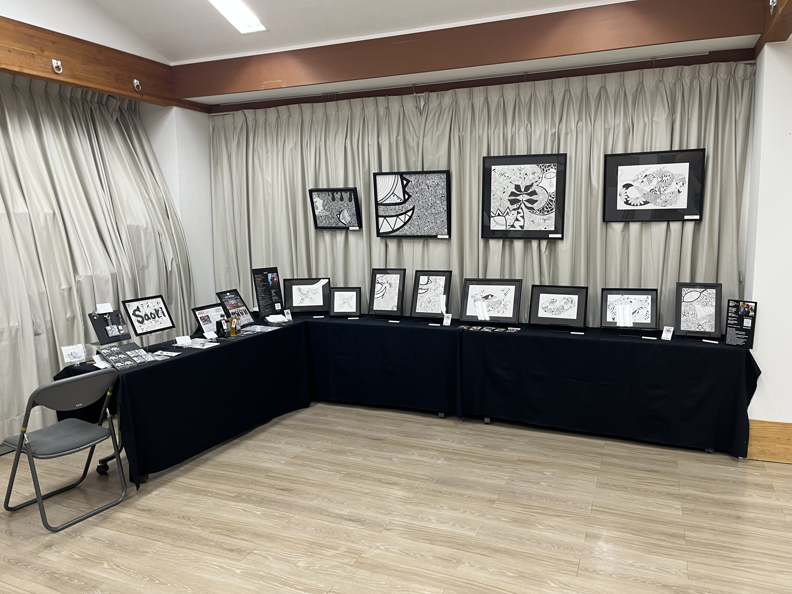

お知らせ
北野台文化祭2026オフィシャルサイト公開
アートが暮らしに溶け込む、
2日間だけの特別な文化祭。
北野台文化祭は、地域住民一人ひとりがアーティストとなり、豊かな感性とあたたかい人々のつながりを育む場所です。絵画、写真、書道、手芸、工芸、子どもたちが心を込めて塗った「きたのんぬりえ」など、多様な表現が自治会館を彩ります。

昨年の開催内容

地域の方の作品展示
絵画、写真、書道、手芸、工芸など、地域の皆さんの力作を展示しました。近隣小中学校の児童・生徒による作品も会場を彩りました。

きたのん塗り絵チャレンジ
子どもたちが自由に色を塗った「きたのん」のぬりえを展示しました。会場を明るく彩る、にぎやかなフォトスポットになりました。

ワークショップ
子どもから大人まで参加できるワークショップを開催しました。作品づくりを通じて、ものづくりの楽しさを体験しました。

地域の方のミニコンサート
地域の方によるミニコンサートを開催しました。あたたかな音楽が会場に響き、来場者の皆さんと交流する時間になりました。

ゲストアーティスト作品展示
ゲストアーティストSaoriさんによる作品展示を行いました。個性豊かな作品が、文化祭に新しい刺激と彩りを添えました。
昨年の様子（ギャラリー）
たくさんの笑顔と素晴らしい芸術に囲まれた、昨年の文化祭のワンシーンです。画像をタップすると拡大表示できます。
出展エントリー受付中
あなたの作品をお待ちしています
作品が完成していなくても申し込みできます。
作品タイトルやコメントは後日変更できます。
地域の皆さんの作品を募集しています。
応募締切は 2026年9月12日（土） です。
案内役 きたのん
北野台のどんぐりの森からやってきた、あたたかい地域を見守るマスコットキャラクター「きたのん」です。
文化祭の会場では、子どもたちから大人の方まで自由に塗って楽しめる「きたのん塗り絵チャレンジ」を予定しています。ぬりえ台紙のダウンロード開始や、当日の展示詳細については現在準備中（詳細は後日公開）です。
公式SNS
文化祭の公式InstagramおよびFacebookにて、準備の様子や最新情報を随時発信しています。
アクセス・開催概要
※開催時間は現在準備中です（詳細は後日公開）。
※駐車場はありませんので、公共交通機関をご利用ください。